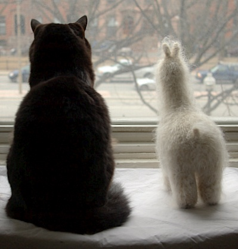
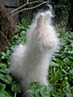
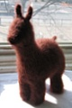
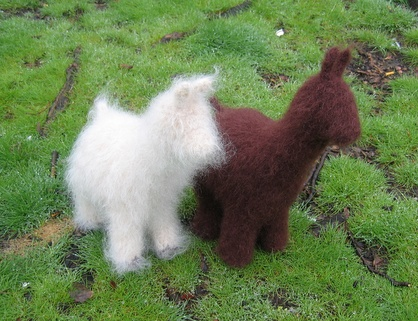

|
||
Premium Patterns Wintry Mix Mitts Love Bytes HawkeyeFree Patterns Kiddie Cadet Summerlin Ruffled Scarf Seamless DS Sock Simply Seamless Pouch Myriads of MushroomsExtras DIY Mitten Blocker Felt Patch Tutorial Yarn Dyeing Tutorial Needle Pouches Knitting Journal |
April 17, 2007 - Posted by Grace SchneblyTwo Furry FriendsI’ve always wanted a fiber farm… but when living in Boston that is a little impractical! So when I saw one of these cute guys in a yarn shop in northern California, I just had to get the pattern. The problem is now that I am a woman obsessed! I this pattern has got me hooked on making felted knit toys.  Project Specs This pattern was so fun to knit. It was so different than anything I had made before, and I am really pleased with how both versions turned out. This was the first pattern that I made that used short row shaping, but it was all really easy to understand. There really isn’t much difference between the instructions for the llama and alpaca (as you can tell they pretty much look the same size and shape), but the llama has slighter longer, legs, neck, and ears. Before felting they look pretty unfortunate, but after they come out of the washer and you stuff them they gain a lot of personality! The best part of this pattern is how versatile it can be since you can knit it out of pretty much any yarn you would like that will still felt; you can really make them your own! I first made the alpaca version quite a while ago. The version I saw in the yarn shop originally was made solely from Lamb’s Pride Worsted in the same color as mine. It was pretty furry and cute, but I wanted mine even furrier! We went into another shop and found the Toaga, and I knew that is what I had to use for this guy. It really is super soft and fuzzy, although it did shed a bit while you work with it. I held the Lamb’s Pride and Toaga together for the entire alpaca, including the feet (I wanted them fuzzy too!). He shed even more in the washing machine, but when he came out he was even fuzzier than before! It did take a long time for the Lamb’s Pride to felt, and it never completely lost all stitch definition. I don’t know if the Toaga was hindering the felting process some or what. Once he was dry, I used a stiff bristled cat brush I had to tease out even more hair and comb it so it didn’t look so wild. I decided not to embroider a face on him because I loved him just like he was. He is amazingly soft and fluffy, but he does need a good brushing every now and then so he doesn’t start looking scraggly. I decided to make the llama after seeing a felted swatch of Lopi; it was so fuzzy, and I immediately thought of this pattern! This was my first time working with Lopi. It definitely isn’t soft and contains a lot of vegetable matter, but I didn’t really care since I was going to be felting it. This guy felted up really fast, but he shed even more than the alpaca during the felting process. I really regret not putting him in a zippered pillow case while doing that! The Lopi felted up amazingly tight, and it did become really furry (but not as fuzzy as the alpaca). He also required a good brushing so he didn’t look mangy. I actually embroidered a little nose and mouth on this guy, but it is impossible to see amongst all that fur. Now these guys are inseparable, and spend most of their day looking out the window and getting sniffed by the cats. I can tell they want another one to join them sometime soon! If I was going to make another alpaca or llama, I would definitely make it out of Lopi. Although it isn’t as soft, its really affordable and gives me the look I’m going for. Plus wouldn’t it be fun to make a giant one out of Lopi Bulky or a baby one out of Lite Lopi?? Does anyone have a suggestion for another yarn to use?  |
   Recent ReviewsRecent Posts
 Our Favorites
|
| © 2007 KathrynIvy.com | ||
{kind=link}
{kind=link}